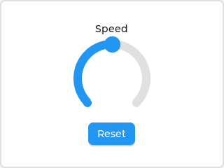
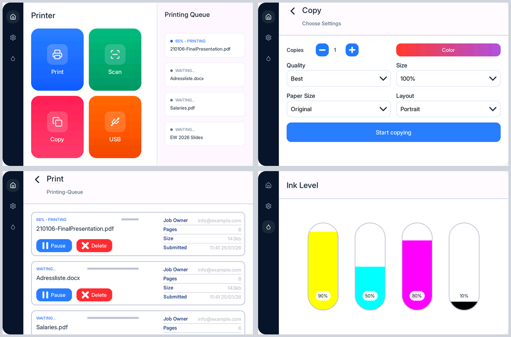
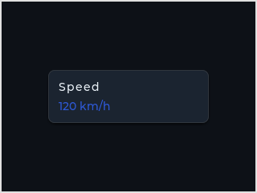
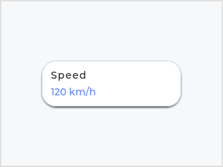

Already have a Qt, Slint or TouchGFX UI? Port it with an agent, and let the compiler check every screen.
Two ports are done: a Slint printer panel and a Qt treadmill panel. Each follows the screens and behaviour of the original, and 67 of LVGL's own widget examples are ported too. lvgl26 writes an LVGL screen as one C++ expression, and the compiler checks every property, unit, id and design token. It is open source and free of licence fees.
#include<lv/lv.hpp>using namespacelv::units;
constexpr auto ui = lv::column(
{.flex_align = {"center", "center", "center"},
.size = {320 * px, 240 * px}})[
lv::label({.id = "title", .text = "Speed"}),
lv::arc({.id = "speedo", .range = {0, 240}, .size = {110 * px, 110 * px}, .value = 120}),
lv::button({.id = "reset", .on_clicked = &reset})[lv::label({.text = "Reset"})]];
auto root = lv::mount<ui>(screen); // built in place; owns the widgetsauto speedo = root->get<"speedo">(); // lv::view<"arc">, typed by the id
speedo.set({.value = 60});

tests/ref/slice.png, 320 x 240. The tree above right after lv::mount, as the test renders it. Every push compares it pixel for pixel, on both LVGL versions.
Licence
MIT
Language
C++26, reflection
Compiler
GCC 16 or newer
LVGL
v9.6.0 and v10 pin
Ports
Move your UI over.
Two UIs of other frameworks are ported, and so are LVGL's own examples. A port follows the original's screens and behaviour. A test shows every screen, and its README lists what differs.

examples/ports/slint/printer/screenshot.png, four of the seven pages. Drawn by lvgl26, on the host, with no display. tests/ports_printer.cpp compares every page with a reference picture in tests/ref/.
Same screens and behaviour as the original: the layout, the colors and the page transitions follow it.
Came from
The printer demo of Slint: .slint files, seven pages.
Checked by
tests/ports_printer.cpp shows every page and compares it with a reference picture in tests/ref/.
To compile
None of the ten files measured took more than 30 s or 3.1 GB, at the project's normal limit for constant evaluation. Measured once with GCC 16.2 on a loaded machine.
Differs
Gradients are vertical or horizontal, and one of the original's four themes is ported. All differences.
examples/ports/qt/treadmill/screenshot.png: the splash screen, then the Light, Dark and Sporty looks. Drawn by lvgl26, on the host, with no display. tests/ports_treadmill.cpp compares every scene with a reference picture in tests/ref/.
The port, same look: tests/ref/treadmill_sporty.png, which tests/ports_treadmill.cpp compares, scaled to 250 x 150. The readings differ: this is the test's scene, at 00:03.
From Qt Quick
Treadmill panel
Same screens and behaviour as the original: the colors, the layout and the three looks follow it.
Came from
TreadmillMcuDemo of Qt Design Studio: QML, a splash screen and one screen in three looks.
Checked by
tests/ports_treadmill.cpp shows every scene and compares it with a reference picture in tests/ref/. It also presses the buttons and runs the clocks.
To compile
None of the six files measured took more than 52 s or 1.7 GB, at the project's normal limit for constant evaluation. Measured once with GCC 16.2 on a loaded machine.
Differs
The splash screen does not fade, and a look is a new tree. All differences.
Six of the ported examples, drawn by lvgl26 from examples/lvgl/widgets/: arc_pie_chart, arc_styling, bar_styling, button_states, slider_modes and switch_state, 320 x 240 each. tests/examples_widgets_arc.cpp, _bar.cpp, _button.cpp, _slider.cpp and _switch.cpp compare each with LVGL's C original.
LVGL's own examples
67 of 96 examples, for 17 widgets
LVGL's C examples, rewritten with lvgl26. The four get_started examples are ported too.
Ported
69 of the 102 examples of the 18 widgets tried so far, and 4 of 4 get_started. examples/README.md lists the ones that wait, and what each needs.
Checked by
tests/examples_get_started.cpp and tests/examples_widgets_*.cpp draw the C original and the port, and compare them pixel for pixel, also after clicks, drags and time.
The tree is a constexpr value. C++26 reflection builds the property structs from LVGL's own C headers, so a wrong name, a wrong unit or a wrong id never reaches the device.
a misspelled idtests/fail/unknown_id.cpp
constexpr auto ui = lv::box[lv::label({.id = "title"})];
lv::mount<ui>(screen)->get<"titel">();
error: the tree has no id 'titel'. Its ids: title
a length where an angle goestests/fail/props_wrong_unit.cpp
constexpr auto ui =
lv::arc({.rotation = 120 * px});
error: ... It takes an angle (90 * lv::deg). You gave lv::length
a raw value in a styletests/fail/style_needs_token.cpp
constexpr auto s =
lv::style({.radius = 8 * px});
error: ... It takes a design token (for example tok.space.md) or lv::raw(...), holding a length ... You gave lv::length
Each message is the text that a compile-fail test in tests/CMakeLists.txt requires. "..." stands for the part of the compiler's line that the test does not pin down. There are 91 such tests.
Properties and units
Generated from LVGL, typed by lvgl26
lv::props<"arc"> is a struct that reflection builds from LVGL's C API: one member per lv_arc_set_* and lv_obj_set_* function, and one per event. Nothing is written by hand and nothing is generated offline.
Sizes take 120 * px, 50 * pct or lv::size_content. Angles take 90 * deg, times 300 * ms.
Integers reject bool, floating point and values that do not fit.
The tree costs nothing at run time. An optimized build contains only the LVGL calls for the properties that are set.
Views never delete.lv::view<"arc"> is one pointer. Only lv::mount and lv::owned<T> own widgets.
Choosing by value
A match that must cover every case
For an enum, reflection checks that every enumerator has exactly one arm.
README.mdlv/match.hpp
enum class mode { off, eco, sport };
const char* name = lv::match(m)(
lv::is<mode::off>.then([] { return"Off"; }),
lv::is<mode::eco>.then([] { return"Eco"; }),
lv::is<mode::sport>.then([] { return"Sport"; }));
leave one out: error: lv::match does not cover: sport. Add an arm for each, or ...
State and bindings
Typed state in ordinary globals
A state says what it holds: a measure with a unit, a count, a bool, an enum, a color. Widgets follow it, and a bound arc writes back. Measures are mp-units quantities, so a conversion that would lose something does not compile.
lv::state<int> is rejected: a plain integer does not say what it is. The error shows the choices.
A state is an lv_subject_t underneath, so C code can share it.
README.mdlv/state.hpp
constinitlv::state speed{0 * km / h};
constinitlv::state clicks{lv::counter{}};
constexpr auto ui = lv::column[
lv::arc({.range = {0, 240}, .value = lv::bind(speed)}), // follows, and writes backlv::label({.text = lv::bind(speed)}), // shows "0 km/h"lv::label({.text = lv::bind(clicks, "{} clicks")})];
speed = 120 * km / h; // the widgets update
speed = 2 * km / min; // converted: nothing is lost
speed = 33 * m / s; // error: 118.8 km/h does not fit an int
speed = 3 * m; // error: not a speed
++clicks;
tests/tokens.cpplv/tokens.hpp
constexpr char dark_json[] = {
#embed"tokens.json"
, 0};
constexpr auto dark = lv::tokens<dark_json>;
// One screen, written once, themed by a token set.template <const auto& T>
constexpr auto themed = lv::column({/* the screen */})[
lv::column({.id = "card",
.size = {200 * px, lv::size_content},
.style = lv::style({.bg_color = T.color.card, .bg_opa = T.opacity.opaque,
.pad_all = T.card.padding, .radius = T.card.radius}) |
T.card.border | T.card.shadow})[
lv::label({.id = "title", .style = lv::style({.text_color = T.color.text}) | T.text.title,
.text = "Speed"}),
lv::label({.style = {.text_color = T.color.primary, .text_opa = T.opacity.muted},
.text = "120 km/h"})]];
auto d = lv::mount<themed<dark>>(screen);
auto l = lv::mount<themed<light>>(screen);
Shortened: the properties of the outer column are left out. The full tree is in the test.
Design tokens
The design file is part of the program
Tokens come from a W3C Design Tokens (DTCG) JSON file. #embed brings it in and a constexpr parser turns each group into a struct and each token into a typed lv::token<T>. Aliases are resolved. A misspelled token, a broken alias or an unreadable value is a compile error.
Styles take tokens only.lv::raw(3 * px) marks a deliberate exception that a search finds.
Composite tokens (border, shadow, typography) merge into a style with |.
Styles of a mounted tree are stored as const lv_style_t in read-only memory.


tests/ref/tokens_dark.png and tokens_light.png. The same tree with two token files. The test also checks that the light screen does not match the dark reference.
Coroutines and animation
A sequence of UI steps reads top to bottom
lv::task is a coroutine on LVGL's own loop. It waits for an event, a timer or an animation.
view.next() names every LVGL event of a widget. The names are generated from LVGL's event list.
lv::first waits for whichever comes first and cancels the rest.
A deleted widget cancels the task and runs the destructors of its local objects.
lv::animate runs one property from one value to another. Both ends have the property's type.
Another thread never calls LVGL. It posts work through lv::ui_scheduler.
Start-up as objects: lv::application and lv::display, no C calls
Typed views that never delete a widget
Properties, styles and events generated by reflection from LVGL's headers
Compile-time UI trees with ids and lv::mount
A mounted tree where the program puts it: never moved, sized by the compiler, in a variable or a constinit global that mounts and unmounts in the same memory
Units for lengths, angles, times and opacity, and strict integers
Design tokens from W3C DTCG JSON through #embed
Themes: one constant styles every widget of a kind; Signal is built in
Images decoded by the compiler from a PNG file into the display's pixels
Fonts made by the compiler from a TrueType file, chosen by a typography token
Signal's typefaces: a second header sets the theme's text in Barlow and makes a font of digits for a large reading
Token-only styles in read-only memory
Selectors: a style for one part in one state, lv::on("knob", "pressed", {...}), in a node or a theme
Typed state and bindings over lv_subject_t, with mp-units measures
Derived state and effects with lv::computed and lv::effect
Lists of keyed rows: a change touches its own row only, and a state follows the selected row
Repetition by reflection: one tile for each enumerator, one line for each captioned member, one element for each record, written by the compiler
Option lists for a dropdown and a roller: .options = {"100%", "75%", "50%"} or lv::options_of<quality>, joined by the compiler, with a state of the enum that follows the choice
Concepts for parts: lv::tree_handler, lv::dependency, lv::font_value and more constrain a part's parameters, and a captureless lambda is a handler
Coroutine tasks on LVGL's loop: events, timers, lv::first
Animations a task can await with lv::animate, with easing curves
Work from other threads through lv::ui_scheduler
Exhaustive matching with lv::match
Runtime JSON screens and patches by id
Agent kit: tree dump, PNG screenshot, MCP server in the host program
Editor support: completion, documentation and marks on mistakes in clangd, from one CMake line
Example ports: 73 of LVGL's own examples, pixel for pixel with the C original, and two UIs of other frameworks: a Slint printer panel and a Qt treadmill panel
Migration guides for Qt Quick, Slint and TouchGFX: what you know, and what lvgl26 has today
The status page names the header and the test behind each, and lists what is planned.
02 / 03
Ready for AI agents.
An agent needs to see what it built. lvgl26 puts a Model Context Protocol server inside the program that shows the UI, so the agent works on the real LVGL screen and checks its own result.
Tool 1
load_documentBuilds a screen from a JSON document. A refused document changes nothing.
Tool 2
apply_patchChanges properties of that screen by id.
Tool 3
dump_treeThe widget tree as JSON: type, id, place and properties.
Tool 4
screenshotThe screen as a PNG, drawn on request. No display is needed.
The agent reads the tree and the picture, then sends the next patch.
In the host program
Two lines to add
Name the widgets a document may use, then serve. The example host in examples/agent is a complete headless program.
Bounded
Only what the schema allows
A widget that is not in the list, a property that does not exist and a value of the wrong kind are rejected. Handlers and pointers cannot come from a document.
For coding agents too
Errors that say what to do
The messages name what a property takes and what it was given, or list the valid ids. An agent that writes C++ gets the same fix hints as a person.
The cost of a UI stack shows up in every unit you ship and every developer you add. lvgl26 and LVGL are both under the MIT licence, and the toolchain is open.
Licence
MIT, both layers
lvgl26 is MIT. LVGL, the library underneath, is MIT. You may use, change and ship both in a commercial product.
Per device
No royalties
The licence asks for no fee per unit. Shipping ten devices or ten million costs the same in licences: nothing.
Per developer
No seat licences
There is no account, no licence server and no fee per developer or per build machine. Clone the repository and build.
Hardware
Low-cost microcontrollers
LVGL is written for microcontrollers and small displays. A compile-time tree adds only LVGL calls, and its styles sit in read-only memory.
Toolchain
GCC, CMake, Ninja
The whole build uses open tools. The build and the tests run in the public gcc:16 container image, so your CI needs nothing that is sold.
Formats
Nothing to lock you in
Design tokens are W3C DTCG JSON. Runtime screens are JSON. Agents speak MCP. Widgets stay plain lv_obj_t* that C code can use.
Quality
Built the way firmware should be.
The library throws nothing: a compile error first, then a contract, then std::expected. Every number below comes from the repository.
91compile-fail tests, each with the message the user must seetests/CMakeLists.txt
2LVGL versions on every change: v9.6.0 and the v10 pinCMakePresets.json
7build presets: warnings as errors, sanitizers, analyzer, coverageCMakePresets.json
8the limit for complexity and for CRAP, for every functiontools/crap.py
3fuzz targets, one for each input that comes from outsidefuzz/
Check
What it does
Where
Compile-fail tests
A file that must not compile, and the text its error must contain. A new error message gets a new test.
tests/fail/
Contracts
C++26 pre and post state what is a bug at run time. Bad input from outside is never a contract: it is a std::expected.
include/lv/
Sanitizers
AddressSanitizer and UndefinedBehaviorSanitizer on both LVGL versions, ThreadSanitizer on v9.6.
host-v96-asan, host-v10-asan, host-v96-tsan
Static analyzer
GCC's -fanalyzer over the library and its tests.
host-v96-analyze
Pixel tests
Screens are rendered headless and compared with reference pictures. The ported LVGL examples are compared with the C originals.
lv::mount<ui>Creates the widgets and owns them, built in place. if (!root) tells a failure.
Run time
LVGLOrdinary LVGL objects on the display. C code sees the same lv_obj_t*.
media/bounce.gif, 320 x 480, 6 seconds.
A demo in development
Motion, written as a coroutine.
A ball bounces with gravity, squashes and stretches, and casts a blurred shadow. The screen is a compile-time tree with design tokens. The motion is a task that awaits one animation after another.
The demo program itself is on a development branch. What it uses is on main: the tree, the tokens, the tasks and the easing curves of lv::animate. The status page lists what works today.
Start
Build it and run the tests.
You need GCC 16 or newer, CMake 3.30 or newer, and Ninja. CMake fetches the pinned LVGL.
Clone, build, test
The presets build with warnings as errors and run the whole suite.
One header. Properties go in (), children in []. Link the CMake target lvgl26::lvgl26.
README.mdC++26
#include<lv/lv.hpp>using namespacelv::units;
void reset();
constexpr auto ui = lv::column({.size = {320 * px, 240 * px}})[
lv::label({.id = "title", .text = "Speed"}),
lv::arc({.id = "speedo", .range = {0, 240}, .value = 120}),
lv::button({.on_clicked = &reset})[lv::label({.text = "Reset"})]];
auto root = lv::mount<ui>(lv::screen_active()); // built in place; owns the widgets
root->get<"speedo">().set({.value = 0}); // a typed view of the arc
Read on
The README covers every feature with examples. Each header in include/lv/ starts with how to use it. To give the screen to an agent, see Agents. For what is done and what is planned, see Status.